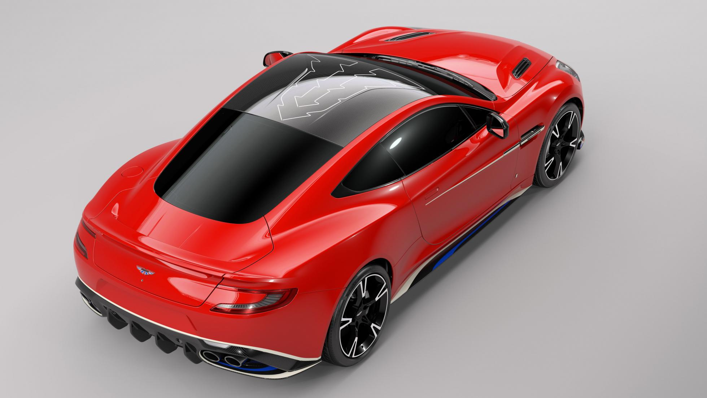
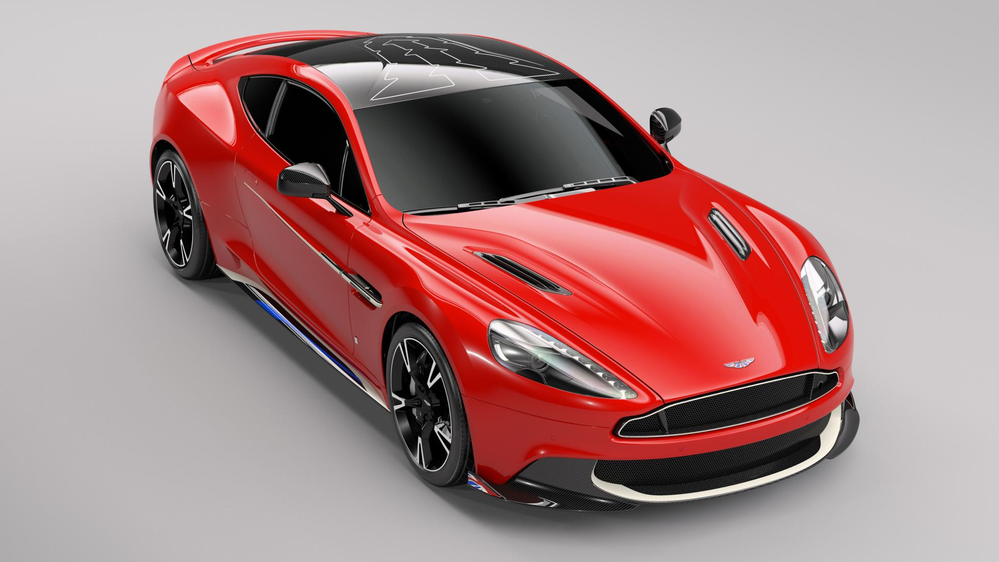
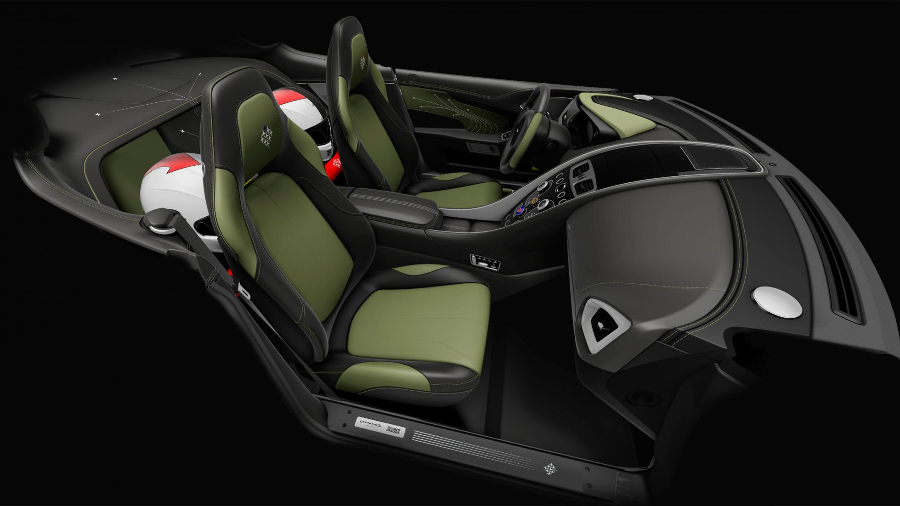

Meet the very best of British.
Or, in other words, the Q by Aston Martin Vanquish S Red Arrows Edition. The ‘want’ is strong with this one.
The Red Arrows, for any of you who’ve never spent a day getting sun-burned on a military airfield watching the world’s most illustrious aerobatics display team defy gravity, death and quite a lot of noise regulations, is the Royal Air Force’s nine-strong team of super-pilots. Since 1965, they’ve been executing daring close-quarters stunts and high-speed passes at events like the British Grand Prix, the Queen’s Diamond Jubilee, and Mick Jagger’s birthday party (probably) tracing red, white and blue smoke into improbable shapes over the English countryside.

Aston Martin’s bespoke-minded Q division has announced it’s to produce ten of these Red Arrows-inspired editions for Aston Martin Cambridge, based on the delectable Vanquish S. That means a 5.9-litre, 592bhp naturally aspirated V12 up front, rear-wheel drive and a top speed of 201mph, passing 60mph along the way in a scant 3.9 seconds. And rather gorgeous bodywork over the top.
To said bodywork, Aston Martin’s Q division has applied the Red Arrows trademark Eclat Red paintwork, as worn by the team’s RAF Hawk jets. The carbon roof has a ‘charge’ pattern laid into it, evoking the look of the zig-zag explosives set into jet cockpits to shatter the canopy in case the pilot has to eject. Aston Martin is adamant the Q brand has not – repeat NOT – fitted the Vanquish S with an ejector seat. Bloody spoilsports.

The white and blue side strakes hint at the smoke trails left by jets arcing through the sky (tyre smoke may also be used for this effect), and the Pinewood green upholstery inside is a subtle nod to RAF flight suits. Plaques and logos abound inside. We particularly like the black and yellow stitching inspired by the ‘do not pull this unless you really have to, old chap’ ejector seat handle. Again, no actual rocket-powered chairs in here. Or missiles. Suppose the real Red Arrows don’t carry weapons either, so that’s okay.
Want to take the kids out in your road-going Red Arrow? Tough. The cars will be homologated as two-seaters only, leaving the rear cubby holes as space for his and hers race helmets. The lids are part of an owners’ accessory set that’ll also include flight suits, bespoke luggage, a book detailing the project and scale models of their car and a Hawk jet. It’s like sorting the main Christmas present and all the stocking fillers in one fell swoop.

Only nine examples will be offered for public sale, mirroring the Arrows’ nine-strong formation. However, Q by Aston Martin will actually build ten cars, with the final one gifted to the RAF Benevolent Fund, the charity established to provide support to former servicemen and women, and their families. Even if fast jets aren’t your thing, you can’t argue with that sentiment.
Meantime, what other legendary military outfits should carmakers ape with their flagship models? Dodge Hellcat in association with Navy Seals? The Ferrari International Rescue Thunderbirds Collection? We await your suggestions below…
Share this page: